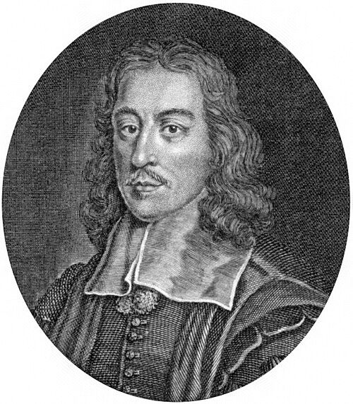
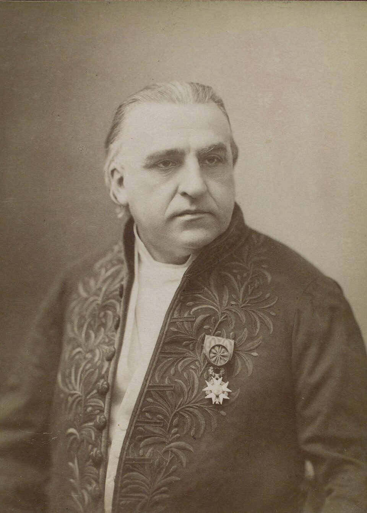
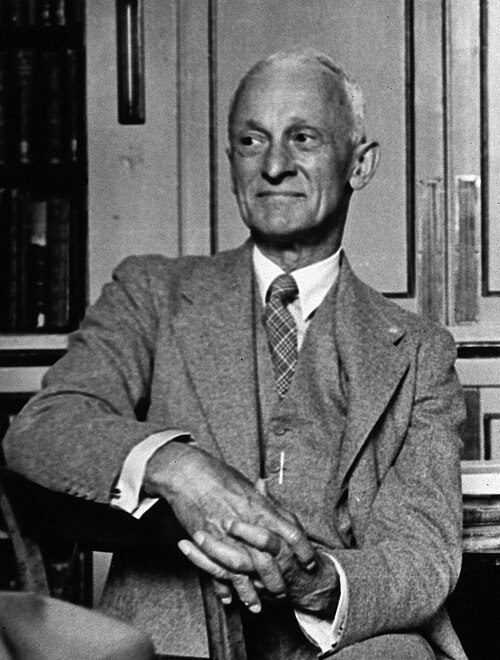
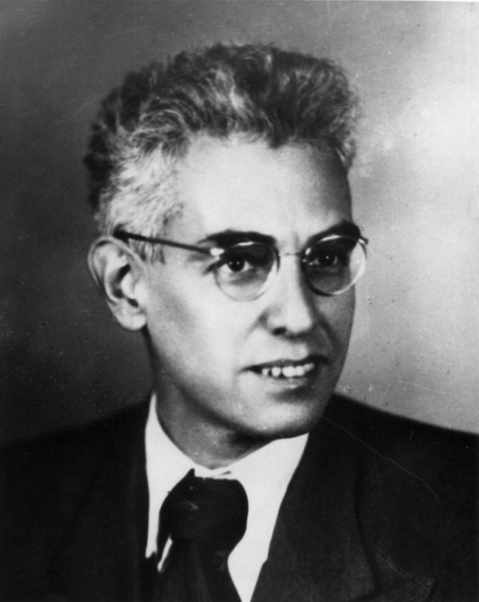

The people behind neurology
Anatomists, clinicians, physiologists and patients who built neurology.
 c. 129–c. 216
c. 129–c. 216Galen
The Greek physician from Pergamon who showed through experiments that the brain, not the heart, controls voice and movement. His authority lasted 1,400 years.
Read → 1514–1564
1514–1564Andreas Vesalius
The Flemish anatomist who dared to correct Galen by dissecting human bodies. His "Fabrica" (1543) includes some of the first accurate images of the brain.
Read →
1621–1675Thomas Willis
The Oxford physician who coined the word "neurology", described the ring of arteries at the base of the brain and placed mental functions in the substance of the brain rather than in the ventricles.
Read → 1755–1824
1755–1824James Parkinson
A London neighbourhood doctor, also a geologist and political activist, who in 1817 precisely described the "shaking palsy" from six people, some of them observed in the street.
Read → 1824–1880
1824–1880Paul Broca
French surgeon and anthropologist who in 1861 located an area in the left frontal lobe needed for speech. It was the first solid evidence that mental functions have a specific seat in the brain.
Read → 1823–1860
1823–1860Phineas Gage
A railway foreman whose skull was pierced by an iron rod in 1848. He survived, but he was "no longer Gage". His case is the most famous patient in the history of neurology.
Read → 1806–1875
1806–1875Guillaume Duchenne
A doctor with no hospital post who toured the wards of Paris with his electrical apparatus. A pioneer of muscle electrophysiology, medical photography and the description of muscular dystrophy.
Read →
1825–1893Jean-Martin Charcot
The "Napoleon of the neuroses" turned the Salpêtrière hospital in Paris into the cradle of modern neurology. He described multiple sclerosis, ALS and the joint disease that bears his name.
Read → 1835–1911
1835–1911John Hughlings Jackson
The "father of British neurology" understood epilepsy as a discharge of neurons and deduced, just by watching how seizures spread, that the cerebral cortex holds a map of the body.
Read → 1848–1905
1848–1905Carl Wernicke
At just 26 he described an area of the temporal lobe needed to understand language and proposed a model of connections between areas that is still taught.
Read → 1843–1926
1843–1926Camillo Golgi
In a hospital kitchen he invented the "black reaction", which at last made whole neurons visible. He shared the Nobel Prize with Cajal, even though he defended the opposite theory.
Read → 1852–1934
1852–1934Santiago Ramón y Cajal
The most influential Spanish scientist in history. He showed that the nervous system is made of independent neurons, worked out how the impulse travels and left thousands of drawings still in use today. Nobel Prize 1906.
Read → 1857–1932
1857–1932Joseph Babinski
A pupil of Charcot of Polish origin who in 1896 described the big-toe reflex that every doctor still uses to detect damage to the brain or spinal cord.
Read → 1857–1904
1857–1904Georges Gilles de la Tourette
A pupil of Charcot who in 1885 described the tic syndrome that bears his name. His life, which included being shot, reads like a novel.
Read → 1857–1952
1857–1952Charles Sherrington
The British physiologist who coined the word "synapse" and explained how the nervous system integrates excitation and inhibition to produce coordinated movements. Nobel Prize 1932.
Read → 1864–1915
1864–1915Alois Alzheimer
German psychiatrist and neuropathologist who in 1906 described, in a 51-year-old patient, the plaques and tangles of the disease that bears his name.
Read →1850–1906Auguste Deter
The first patient diagnosed with Alzheimer's disease. Her medical file, lost for almost a century, was found in Frankfurt in 1995.
Read → 1882–1945
1882–1945Pío del Río Hortega
A pupil of Cajal, he discovered microglia and characterised oligodendrocytes using his own staining method. Twice nominated for the Nobel Prize, he died in exile in Buenos Aires.
Read → 1873–1961
1873–1961Otto Loewi
A dream gave him the idea for the experiment that proved neurons communicate through chemical substances. Nobel Prize 1936, he had to hand over the prize money to the Nazis to leave Austria.
Read →
1869–1939Harvey Cushing
The father of modern neurosurgery. He cut the death rate of brain operations from over 30% to under 10%, operated on more than 2,000 tumours and described the disease that bears his name.
Read → 1873–1941
1873–1941Hans Berger
A German psychiatrist who was looking for the physical basis of telepathy and ended up recording, in 1924, the first human electroencephalogram. He discovered the alpha rhythm.
Read → 1891–1976
1891–1976Wilder Penfield
The neurosurgeon who stimulated the brains of awake patients during epilepsy surgery and drew the famous homunculus. He founded the Montreal Neurological Institute.
Read → 1902–1990
1902–1990Rafael Lorente de Nó
Cajal's youngest pupil described the organisation of the cerebral cortex and hippocampus into columns and circuits, and was a pioneer of the physiology of neural circuits.
Read →
1902–1977Alexander Luria
Soviet neuropsychologist who studied thousands of soldiers with brain wounds and founded modern neuropsychology. He wrote two case histories that inspired Oliver Sacks.
Read → 1914–1998 and 1917–2012
1914–1998 and 1917–2012Alan Hodgkin and Andrew Huxley
Two British physiologists who, with the giant axon of the squid and a mechanical calculator, explained how the nerve impulse is generated. Their mathematical model is still valid.
Read → 1909–2012
1909–2012Rita Levi-Montalcini
She did research in a makeshift laboratory in her bedroom during Fascist persecution and discovered nerve growth factor. Nobel Prize 1986, she worked until she was 103.
Read → Born 1918
Born 1918Brenda Milner
The neuropsychologist who, by studying patient H. M., showed that the hippocampus is essential for forming memories and that there are different memory systems. She kept working past the age of one hundred.
Read → 1929–
1929–Eric Kandel
He fled Vienna as a child in 1939 and decades later discovered, in a sea slug, the molecular changes in synapses that allow us to learn and remember. Nobel Prize 2000.
Read → 1933–2015
1933–2015Oliver Sacks
The writer-neurologist who told his patients' stories with curiosity and humanity. "The Man Who Mistook His Wife for a Hat" and "Awakenings" brought neurology to millions of readers.
Read → 1963– and 1962–
1963– and 1962–May-Britt and Edvard Moser
A married couple of Norwegian neuroscientists who discovered "grid cells", the coordinate system of the brain's GPS. Nobel Prize 2014 together with John O'Keefe.
Read →